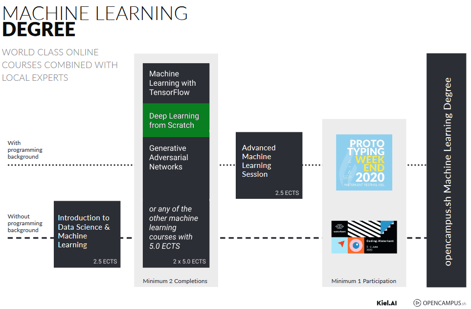

The Machine Learning Program
WHO AM I?
WHO ARE YOU
Overview
Neural Networks
The basics about neural network, how we can create our own, and why they can be so simple yet so powerful.Python
How to deal with vector and matrices in python. Vectorization is an extremely useful resource, that can be used also outside of python.Shallow or Deep?
What is meant for shallow or deep neural network, what are the differences, and when they make sense.Hyperparameters
The magic part about neural networks, how to tune the parameters and choose optimizations algorithms.Structuring a project
How to get your project working and how to improve it.Your own project
Start to get hand-on experience and do your own project.Starting a Project
Everybody has to make a project
It does not matter the actual outcome of the project, it is about the experience - also not graded
Projects are made in small groups - groups will be made in ~1 month
You have the possibility to choose the groups on your own for a week, then we will proceed to group the remaining people
Finishing a Project
There will be a peer-review process around the beginning of June
Projects should be published
To complete the project, we ask you to create:
Present your Project
During the last sessions, each group will present their own project. External guests may be present.
In order to guarantee enough time for everyone, we may split the last session in two sessions. Both are mandatory.
HOW THE COURSE WORK
Coursera Courses
We will follow these 3 courses:Python Notebooks
Google Colab
Zoom Sessions
1 - Quiz: we start with an ungraded quiz about the last week
2 - Discussion: we discuss shortly about the questions and clarify if anyone has doubts
3 - Open Questions: we prepare some open questions, which you will discuss in small groups (~5 minutes) and then one person per group will present the results
4 - Exercises: some participants will be selected, we go through the assignment together and comment the code (the solutions will be provided from us if you do not want to share yours)
Remember: there are no grades, we are in a safe space open to discussions, most of the time there is no right or wrong answer.
How we discuss in small groups?
Zoom has the possibility to create breakout rooms.During the week
Refer to the Gitbook for material and links.
Ask and answer questions in the Deep Learning Channel in the Mattermost Chat
If you did not join the channel, please do or write me and I will add you.
Feel free to contact me anytime on Mattermost or at: luca@opencampus.sh
For the next week
(OPTIONAL)
If you have enough time, start looking at the second week of the course. The two weeks are not equally divided, estimated times are ~2 hours for the first week and ~8 hours for the second. Therefore, it may be better to divide in two blocks of 5 hours per week.